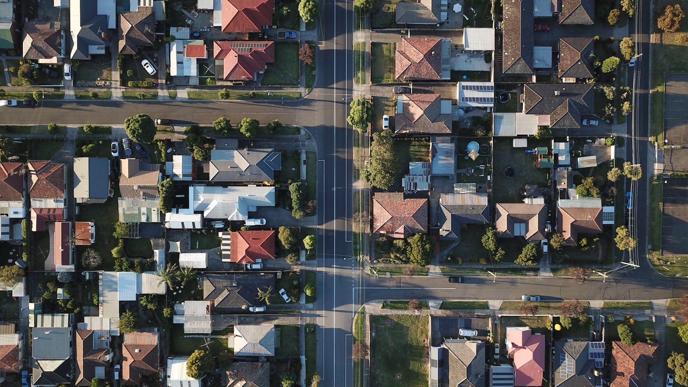

KNOWLEDGE
房產知識
買房賣屋、稅務、貸款、合約、社區——這些眉角，淑珠用看得懂的白話文，一篇一篇講給你聽。
以下為文章版型範例，標題與摘要僅供排版參考。正式發布前，實際內容、數字與生效日期會由淑珠確認查證後再產出完整文章。





ASK ME
還有其他房產問題想問？
不管是買賣、稅務還是貸款問題，歡迎直接找淑珠聊聊，我會用最實際的角度給您建議。
KNOWLEDGE
買房賣屋、稅務、貸款、合約、社區——這些眉角，淑珠用看得懂的白話文，一篇一篇講給你聽。
以下為文章版型範例，標題與摘要僅供排版參考。正式發布前，實際內容、數字與生效日期會由淑珠確認查證後再產出完整文章。

ASK ME
不管是買賣、稅務還是貸款問題，歡迎直接找淑珠聊聊，我會用最實際的角度給您建議。